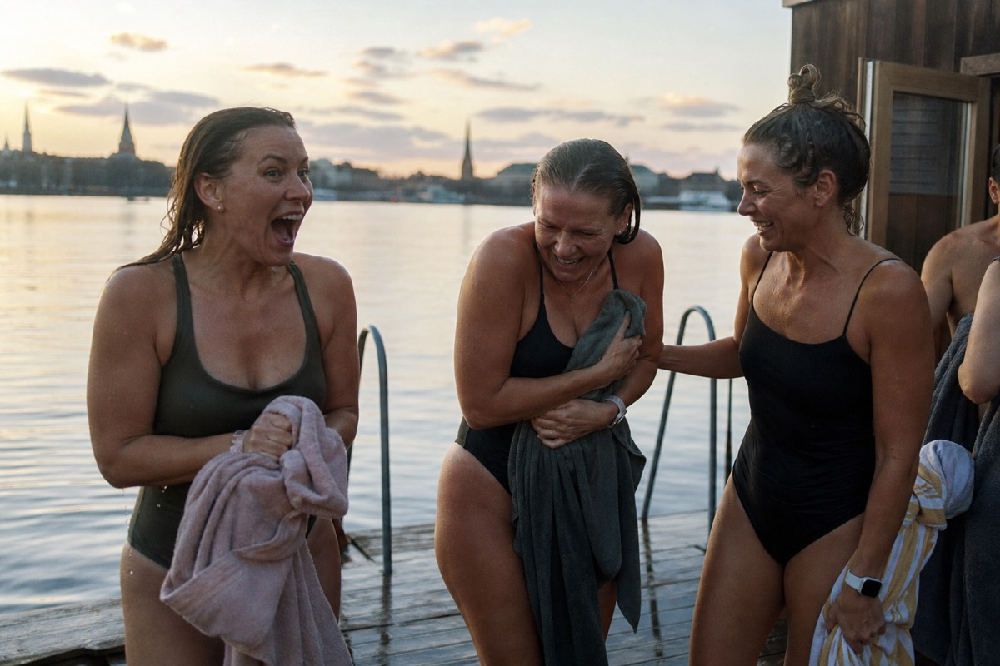
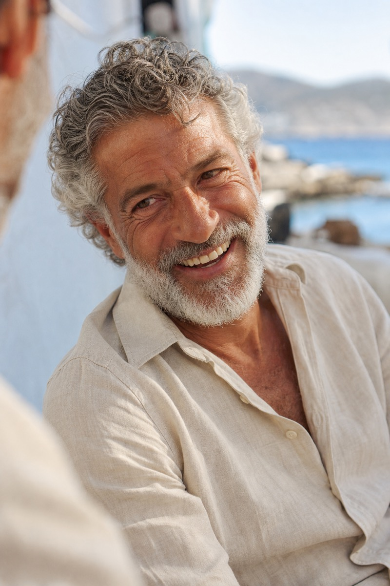

The palette is aviation: the instrument and the day. A cold, exact instrument register — gunmetal is the signature weave, navy the flat grounds it sits on, graphite and steel the weave's two ends, and slate the labels and secondary text — and a warm human register: paper, ink, and a single gold. The cold is the computation; the warm is the person; gold is the one signal between them, and ember is hazard only. Every value below is measured, and the interaction grid is the law.
Indigo · Gold · Ember · Slate
Ink · Cream · Gold · Lit gold · Text gold · Ember · Slate on four grounds · measured · bold passes 4.5 and may run as text · struck pairs are forbidden in any role · gold on light grounds is line, fill, signal, never text · text gold 8A6A2F is gold's text grade, light grounds only, the day counterpart of lit gold · ember is hazard only, and only on light grounds
Some of your best days are still ahead of you.
Warm at the surface, rigorous one layer down.
The signature, replacing the dawn fade · gunmetal: graphite above, steel below — the airframe and the panel, not a sky · 15171C · 222831 · 333E48 · 46555F · vertical, dark above light · continuous and stepped · the cold register lives here; the photograph beside it stays warm
Paper 46 · Ink 14 · Navy 16 · Gunmetal 16 · Gold 6 · Ember 2 — paper grounds the day; navy holds the flat grounds, gunmetal the signature weave; gold a thin signal
The medical team you would build for yourself.
Physician-led preventive medicine for capacity, risk, and vitality over time. Cohorts open in waves.
ApplySee the medicineMost first reviews change the plan.
Same labs, same body, different level of care. Drivers overlap; the headline figure is the union, not the sum.
Same components, both registers · mark is a placeholder, not yet introduced
A photograph works here when it transmits a sensation the viewer's body can feel: effort, cold, rain, weight, height, taste, with its cause visible in the frame. The subject is fully absorbed in their own world, never aware of the frame; emotion is a result, never a requirement. Different people, different pursuits, different continents, the same vivid state: each frame possibly one of the best days of someone's life.



Ola's lockup, codified from the Figma source so it repeats exactly: aleron in PolySans Neutral 400, tracked −2.75% of em, with a superscript MD in Space Mono 400 at 44.4% of the word; measured, not screenshotted. The icon is the word's first letterform alone: a lowercase a in a square tile, the only form small surfaces can carry. PolySans is not licensed here yet, so every render below carries the exact geometry in the working face; the letterforms become exact when the license or one SVG export from Figma lands.
The lockup, codified from source: aleron lowercase, PolySans Neutral 400, tracked −2.75% of em, line height 1.06 · tag MD, Space Mono 400, 44.4% of word size, tracking 0 · tag top 8.5% of word size below the word's top, gap 3% · word EFEAE0 on dark, 232325 on light · tag gradient C9A14E to 8A6A2F, vertical, the study's gold and its text grade · never all caps · minimum word size 16px, below it the name sets in prose · color application per the study, after structure
Space Mono is locked as the audit face: units, sources, footnotes, the wordmark's tag. The open decision is the voice face, everything a member reads: PolySans, the face the wordmark is codified in, against Hanken Grotesk, free and rendering this document now. Deciding the face decides whether the wordmark renders exactly or by adaptation.
Read live from the stylesheet; the deck consumes the same variables · body remains system font until the face is decided
Text on the system's grounds follows the interaction grid; struck pairs stay struck
Measured live where measurable · the PolySans column fills when the license lands · the table decides, not prose
The instrument, visible.
The brand identity is the interplay between the navigation intelligence and the hero's destinations, and this section makes the instrument visible without a costume: no dashboard chrome, no character, no decoration. The elements: the velocity weave, where the instrument touches the world; the citation, the work shown in units; and the plot, the live instrument members actually use. The world is never resampled, and structure precedes color everywhere.

The velocity weave · one generator, one canon: the source hero's map, cell for cell · lattice 8 columns, rows derived, every cell identical, 10:3 wide; the aspect is the velocity · two elements, photograph and page; page states paper, navy, or the gunmetal instrument weave (the cold register; the photograph beside it stays warm) · one side holds the mass; even rows one cell deeper; depth follows the subject and the message · exchange count for count, never inside the core · the subject sits in front and occludes; the face is never covered · left mirrors right exactly in study; in production the side spares the subject, and the message sits on the mass's solid core · placements from the generator only
The quality of life instrument, live · three inputs, four futures · capacity in VO2max, bands in what a day allows · palette from the system: paper ground, gold forward, slate baseline, ember hazard, indigo for the window the instrument does not model · instrument type, two roles: the voice face for names (bands, outcomes, controls), the audit face for values, units and scale marks; sizes 14/13 names, 15/12 values, 11 marks · the curve's home: a working tool, never decoration
Borrowed from the flight deck, each one functional: the dark cockpit, silence is normal, only change speaks · the annunciator, alerts collected in one place, fixed order, flagged then moved then notes, never mixed into the record · reserved color, ember and gold are alert levels and never categories · the flag, missing data declares itself, never blank · fixed scan order, groups never reorder between reports · groups breathe, rows tight, names voice, values audit, decimals aligned · the one thing never sits inside the volume
Two layers, split by job, both decided. The marks are interface-scale: instrument marks, drawn with the chart room's own vocabulary — hairline, square joints, ink only. The illustration is the objects of the service, drawn flat and honest: outline and fill, the recipe codified below. Retired explorations live in the project record.
Decided 06/12/2026 · hairline 1.5, square joints, ink only · the vocabulary of the chart: ticks, fixes, courses, sectors · one filled fix permitted per icon · no gold · on dark grounds the set strokes in cream


Outline and fill, chosen · real objects from the current world, drawn: fine ink on the edges, only the seams the object truly has, each face one flat cel value · strict palette, one gold detail at the instrument's touch · the shadow flat indigo and light, per the recipe · unmistakably drawn, never a render · objects only, never people · floor 64px
Six blocks; five fixed, rendered verbatim every time · subject is the only slot · the blocks live as constants in tools/gen-objects.py; objects render from the generator only
"Best part isn't the labs or the engine. It's getting a voice message from my doctor on a Tuesday afternoon explaining what to do next, like a friend who happens to be brilliant." A member said this before the brand could; it names the physician's voice, and the voice's only job is to keep deserving it. The instrument speaks underneath in its own register: the physician in sentences, the instrument in units.
Your April labs are back. Two things worth your attention, one thing to ignore.
ApoB is down to 78 mg/dL from 96 mg/dL in October. Whatever you changed, keep it. Lp(a) is unchanged at 62 nmol/L; that one is genetic, and we manage around it, not against it.
CRP ticked up to 1.9 mg/L, but you ran a marathon nine days before the draw, so we will retest in six weeks instead of reacting now.
Nothing needed from you this month. Enjoy the snow with Maya.
The rules: units on every number · says what not to chase · "I don't know yet," said plainly · no exclamation points · no em dashes · never sells · the second question is welcome
The system on real surfaces: the landing, the app, the letter, the card. Each is assembled only from parts this document already defines — the weave from its generator, the fade used whole, the two faces under instrument discipline, the gold fix, the record at volume. Nothing is invented at the point of use; a surface that needs something new sends it back through the section that owns it.
aleronmd.com · the canon weave, mass left, the gunmetal instrument weave, 8 × 14, subject spared, face clear · the cold/masculine register lives in the weave; the photograph stays warm · the message sits on the mass's solid core: rows 9–13, columns 0–3 one unbroken rectangle — the canon's two taps at column 3 filled by echo, no photograph inside the lower left · cream text on the steel core · top-right corner cells withheld: the source's contrast block under apply, not needed — the filled action carries its own ground · headline voice 400, lh 1.05 · apply cream top right, ghost action under the headline · lockup cream on the dark rows
Review with Dr. Chen
app.aleronmd.com · the chart room, night register · dark cockpit: 104 markers, the quiet ones say nothing · the annunciator's hazard is a lit tile — ember fill, cream text; ember text never sits on dark, per the grid · advisories lit gold · names voice, values audit, decimals aligned · marks: the instrument set, cream · actions per the locked set · the one thing never sits inside the volume
David,
ApoB is down to 78 mg/dL from 96 mg/dL in October. Whatever you changed, keep it. Lp(a) is unchanged at 62 nmol/L; that one is genetic, and we manage around it, not against it.
Everything else on the panel is quiet. We left cortisol for the fall draw, with your travel schedule in mind.
The one thing: keep the dose where it is.
Sarah Chen, MD
US letter · voice for the words, audit for the record · one gold fix per surface · the shadow flat indigo, per the object rule
CR80, 85.6 × 54 · indigo ground, cream lockup, one gold seal · names in audit · the shadow flat indigo, paper between, per the corollary · nothing else
Three actions, from Ola's button set, measured: primary filled, secondary hairline, tertiary bare · the word in the voice face, 400, 16px, −1% em, sentence case, centered · corners square; weight comes from the fill, never the face · states: disabled loses its ink to 38 percent, loading is three dots · gold is never a button — gold is the signal, never the control · source: Figma, Buttons page, component set 19:4963